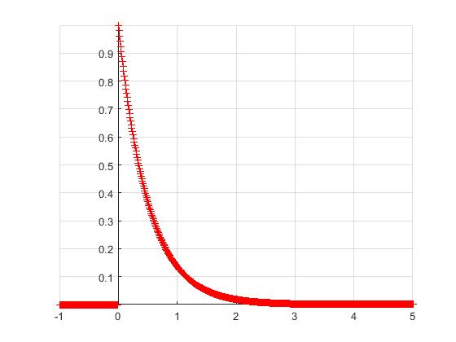
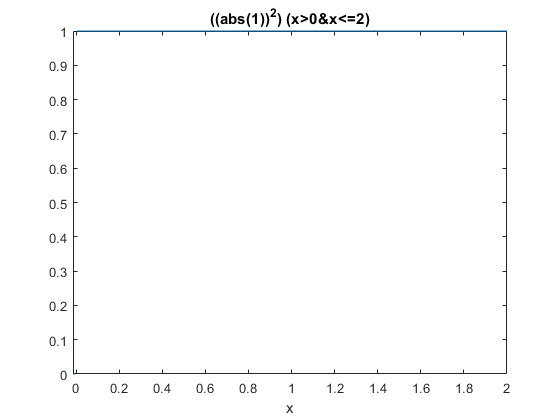
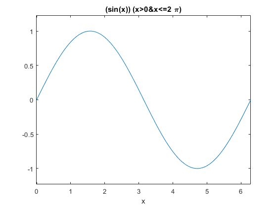
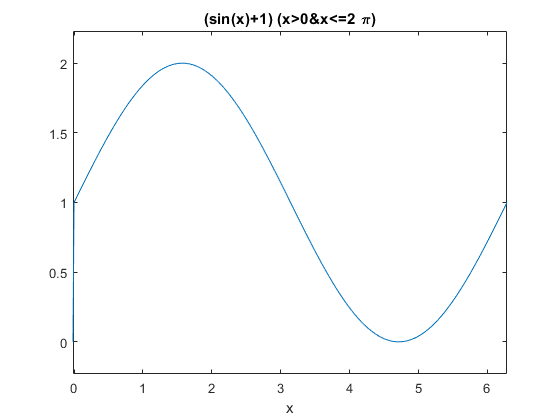
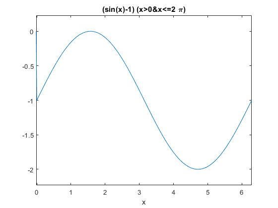

UPIITA
IPN
Integrantes:
Bravo Padilla Eric
Calderon Landeros Sergio David
Sanchez Lara Jose Maria
Noe Millan Yuval Zuriel
Índice
Introducción
Objetivos
Desarrollo
Problema 1
Problema 2
Problema 3
Problema 4
Problema 5
Problema 6
Problema 7
Introducción
Matlab nace como una solución a la necesidad de mejores y más poderosas herramientas de cálculo para resolver problemas de cálculo complejos en los que es necesario aprovechar las amplias capacidades de proceso de datos de grandes computadores.
Surge en 1984 la primera versión, elaborada por: Steve Bangert, que escribió el intérprete parser, Steve Kleiman que implementó los gráficos, John Little y Cleve Moler que escribieron las rutinas de análisis, la guía de usuario y la mayoría de los ficheros ‘.m’. Todo con la idea de usar paquetes de subrutinas escritas en Fortran en los cursos de Análisis Numérico y Algebra Lineal, sin tener una necesidad de programas que usarán este lenguaje.
Desde la primera versión muchas otras personas han contribuido al desarrollo de Matlab.
El nombre viene de "Matrix Laboratory" (laboratorio matricial). Este fue originalmente escrito en 1970 para proveer acceso fácil al software matricial desarrollado por los proyectos LINPACK y EISPACK, que juntos representan el estado del arte de software para computación matricial.
En 2004 se apreciaba que era usado por aproximadamente más de un millón de personas, tanto académicos como empresarios.
La versión actual fue escrita en C por The Mathworks. Hoy es usado en una variedad de áreas de aplicación incluyendo procesamiento de señales e imágenes, diseño de sistemas de control, ingeniería financiera e investigación médica. La arquitectura abierta facilita usar Matlab y los productos que lo acompañan para explorar datos y crear herramientas personalizadas que proveen visiones profundas tempranas y ventajas competitivas.
A pesar de todos los pros que ofrece dicho software, se necesitan licencias para poder usarlo y desafortunadamente existen personas a las que no les es posible obtenerlas. Aquí es donde entran las alternativas de software libre como Octave y Phyton.
Python es un lenguaje de programación interpretado de alto nivel para programación de propósito general. Creado por Guido van Rossum y lanzado por primera vez en 1991, este tiene una filosofía de diseño que enfatiza la legibilidad del código, especialmente al usar espacios en blanco significativos. Proporciona construcciones que permiten una programación clara tanto en escalas pequeñas como grandes.
Entre sus ventajas se encuentran:
* Desarrollo de principio a fin para ejecución (algunos paquetes de brokers permiten la ejecución, IB).
* Paquetes de código abierto (Pandas, Numpy, scipy).
* Paquetes comerciales (zipline, pybacktest, pyalgotrade).
* Lo mejor para programación general y desarrollo de aplicaciones.
* Puede ser un lenguaje de "pegamento" para conectar R, C ++ y otros.
* La velocidad general más rápida, especialmente en bucles iterativos.
Entre sus desventajas se encuentran:
* Paquetes inmaduros, especialmente paquetes comerciales.
* Algunos paquetes no son compatibles con otros o contienen solapamiento.
* Comunidad más pequeña que R en finanzas.
* Se requiere más código para las mismas operaciones en comparación a R o Matlab.
* Errores silenciosos que pueden tardar mucho tiempo en rastrearse, incluso con depuradores visuales / IDE.
Por otra parte, Octave es una especie de respuesta GNU a Matlab. Es decir, es un lenguaje de matriz de secuencias de comandos y tiene una sintaxis que es aproximadamente 95% compatible con ese software. Es un lenguaje diseñado por ingenieros y, por lo tanto, está muy cargado de rutinas comúnmente utilizadas por los ingenieros. Tiene muchas de las mismas rutinas de análisis de series temporales, rutinas de estadísticas, comandos de archivos y comandos de trazado del lenguaje Matlab.
En cuanto a sus ventajas:
* En primer lugar, no hay un compilador robusto de Octave disponible y esto tampoco es realmente necesario, ya que el software se puede instalar de forma gratuita.
* En cuanto al elemento de lenguaje, los dos paquetes son idénticos, excepto por algunas particularidades como las funciones anidadas. Octave está en constante desarrollo activo y cada desviación de la sintaxis de Matlab se trata como un error o al menos como un problema por resolver.
* También hay una gran cantidad de cajas de herramientas disponibles para Octave y siempre que un programa no requiera una salida gráfica, es muy probable que se ejecute bajo este al igual que bajo Matlab sin una modificación considerable.
* Las capacidades gráficas son claramente una ventaja de Matlab. Las últimas versiones incluyen un diseñador de GUI además de excelentes características de visualización.
* Octave usa GNU Plot o JHandles como paquetes de gráficos, donde este último está más cerca de lo que proporciona Matlab. Sin embargo, no hay equivalentes de Octave para un diseñador de GUI y los mecanismos de visualización son de alguna manera limitados y no son compatibles con Matlab.
* Lo mismo vale para un entorno de desarrollo integrado. Hay un proyecto llamado QTOctave, pero todavía está en una etapa temprana.
* Al observar los esfuerzos de colaboración que se llevan a cabo alrededor de la comunidad de Octave, es probable que este software pronto brinde mejores y posiblemente compatibles gráficos y capacidades de GUI, y vale la pena verlo antes de comprar Matlab.
Y en cuanto a sus desventajas:
* Es solo una fuente abierta gratuita de MATLAB y no nos traiga nada nuevo.
Objetivos:
Manipulación básica de MATLAB
Gráficas de señales reales y complejas continuas
Transformación de señales continuas (escalamientos y traslaciones
Calculo de energía y potencia de señales continuas
Desarrollo
Problema 1
function [F]=fun1(a,w)
F=rdivide(a,a^2+w^2);
end
Problema 2
Problema 3


Problema 4
f=@(t) exp(-t).*cos(2*pi*t)
f(0)
t = (-2:2);
f(t)
figure
plot(t,f(t));
xlabel('t');
ylabel('f(t)');
grid on;
figure
t = (-2:0.01:2);
plot (t,f(t));
xlabel('t');
ylabel('f(t)');
grid on;
f =
function_handle with value:
@(t)exp(-t).*cos(2*pi*t)
ans =
1
ans =
7.3891 2.7183 1.0000 0.3679 0.1353
u =@(t) t>=0
figure
t = (-2:2);
plot (t,u(t));
xlabel('t');
ylabel('u(t)');
grid ;
figure
t = (-2:0.01:2);
plot (t,u(t));
xlabel('t');
ylabel('u(t)');
axis ([-2 2 -0.1 1.1]);
figure
p = @(t) (t>=0) & (t<1);
t = (-1:0.01:2);
plot(t,p(t));
xlabel('t');
ylabel('p(t) = u(t)-u(t-1)');
axis ([-1 2 -.1 1.1]);
u =
function_handle with value:
@(t)t>=0
g =@(t) exp(-t).*cos(2*pi*t).*(t>=0)
figure
t = (-2:0.01:2);
plot(t,g(2*t+1));
xlabel('t');
ylabel('g(2t+1)')';
grid;
figure
plot(t,g(-t+1));
xlabel('t');
ylabel('g(-t+1)')';
grid;
figure
plot(t,g(2*t+1) +g(-t+1));
xlabel('t');
ylabel('h(t)')'; grid;
g =
function_handle with value:
@(t)exp(-t).*cos(2*pi*t).*(t>=0)
x = @(t) exp(-t).*((t>=0)&(t<1));
t = (0:0.01:1);
E_x= sum(x(t).*(x(t).*0.01))
t = (0:0.01:1);
integral =@(t) exp(-2*t).*((t>=0)&(t<1));
Ef= quad(integral,0,1)
g_squared =@(t) exp(-2*t).*(cos(2*pi*t).^2).*(t>=0);
t = (0:0.001:100);
E_g = sum(g_squared(t)*0.001)
E_g2 = quad(g_squared, 0,100)
E_x =
0.4367
Ef =
0.4323
E_g =
0.2567
E_g2 =
0.2562
Problema 5
x=@(t) -t.*(t>=-4 & t<0)+ t.*(t>=0 & t<2);
figure
t = (-5:0.001:3);
plot (t,x(t));
grid on ;
axis([-6 5 -1 6]);
ax=gca;
ax.XAxisLocation = 'origin';
ax.YAxisLocation = 'origin';
ax.Box='off';
title('grafica de las señales f(t)=-t(u(t+4)-u(t))+t(u(t)-u(t-2))')
figure
t = (-10:0.001:10);
plot (t,x(t-4));
grid on ;
axis([-2 7 -1 6]);
ax=gca;
ax.XAxisLocation = 'origin';
ax.YAxisLocation = 'origin';
ax.Box='off';
title('grafica de las señales f(t-4)')
figure
t = (-10:0.001:10);
plot (t,x(t/1.5));
grid on ;
axis([-9 7 -1 6]);
ax=gca;
ax.XAxisLocation = 'origin';
ax.YAxisLocation = 'origin';
ax.Box='off';
title('grafica de las señales f(t/1.5)')
figure
t = (-10:0.001:10);
plot (t,x(-t));
grid on ;
axis([-4 5 -1 6]);
ax=gca;
ax.XAxisLocation = 'origin';
ax.YAxisLocation = 'origin';
ax.Box='off';
title('grafica de las señales f(-t)')
figure
t = (-10:0.001:10);
plot (t,x(2.*t-4));
grid on ;
axis([-1 4 -1 6]);
ax=gca;
ax.XAxisLocation = 'origin';
ax.YAxisLocation = 'origin';
ax.Box='off';
title('grafica de las señales f(2t-4)')
figure
t = (-10:0.001:10);
plot (t,x(2-t));
grid on ;
axis([-1 8 -1 6]);
ax=gca;
ax.XAxisLocation = 'origin';
ax.YAxisLocation = 'origin';
ax.Box='off';
title('grafica de las señales f(2-t)')

Problema 6
Energía
function [q] = Energia(f,p1,p2)
q= integral(f,p1,p2);
ezplot(f);
Problema 1.1.3.a
f =@(x) ((abs(1)).^2).*(x>0 & x<=1)+((abs(-1)).^2).*(x>0 & x<=1);
Energyorasi(f,-Inf,Inf)
f =@(x) (1).*(x>0 & x<=1)+(-1).*(x>1 & x<=2);
Energia(f,-Inf,Inf)
f =@(x) ((abs(2)).^2).*(x>0 & x<=1);
Energia(f,-Inf,Inf)
f =@(x) ((abs(2)).^2).*(x>1 & x<=2);
Energia(f,-Inf,Inf)
f =@(x) ((abs(sin(x))).^2).*(x>0 & x<=2*pi);
Energia(f,-Inf,Inf)
f =@(x) ((abs(1)).^2).*(x>0 & x<=2*pi);
Energia(f,-Inf,Inf)
f =@(x) ((abs(sin(x)+1)).^2).*(x>0 & x<=2*pi);
Energia(f,-Inf,Inf)
f =@(x) ((abs(sin(x)-1)).^2).*(x>0 & x<=2*pi);
Energia(f,-Inf,Inf)
Energia =
2.0000
Energia =
4.4631e-11
Energia =
4.0000
Energia =
4.0000
Energia =
3.1416
Energia =
6.2832
Energia =
9.4248
Energia =
9.4248





Problema 1.1.3.b
f =@(x) ((abs(sin(x))).^2).*(x>0 & x<=pi);
Energia(f,-Inf,Inf)
f =@(x) ((abs(1)).^2).*(x>0 & x<=pi);
Energia(f,-Inf,Inf)
f =@(x) ((abs(sin(x)+1)).^2).*(x>0 & x<=pi);
Energia(f,-Inf,Inf)
f =@(x) ((abs(sin(x)-1)).^2).*(x>0 & x<=pi);
Energia(f,-Inf,Inf)
Energia =
1.5708
Energia =
3.1416
Energia =
8.7124
Energia =
0.7124
Problema 7
Potencia
function [q] = Potencia(f,T)
q= (1/T)*integral(f,-T/2,T/2)
Problema 1.1.4
f =@(x) ((abs(x.^3)).^2).*(x>-2 & x<=2);
Potencia(f,4)
f =@(x) ((abs(-x.^3)).^2).*(x>-2 & x<=2);
Potencia(f,4)
f =@(x) ((abs(2*x.^3)).^2).*(x>-2 & x<=2);
Potencia(f,4)
f =@(x) ((abs(c*x.^3)).^2).*(x>-2 & x<=2);
Potencia(f,4)
Potencia = 9.1429
rms = 3.0237
Potencia = 9.1429
rms = 3.0237
Potencia = 36.5714
rms = 6.0474